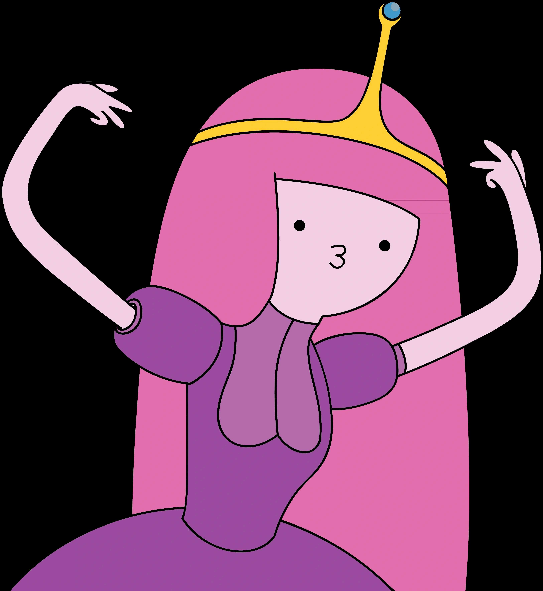

Princess Bonnibel "Bonnie" Bubblegum, known as Princess Bubblegum, is a main character from "Adventure Time." Born from the Mother Gum after a nuclear fallout, she is popular for her intelligence, snark, and personality. Many fans, including those who are queer or women, admire her badassery and quirky disposition.
She is voiced by voice actress Hynden Walch who also voices Starfire in another popular Cartoon Network show, "Teen Titans GO!". She is Finn's former love interest, and is canonically in a relationship with Marceline the Vampire Queen.
